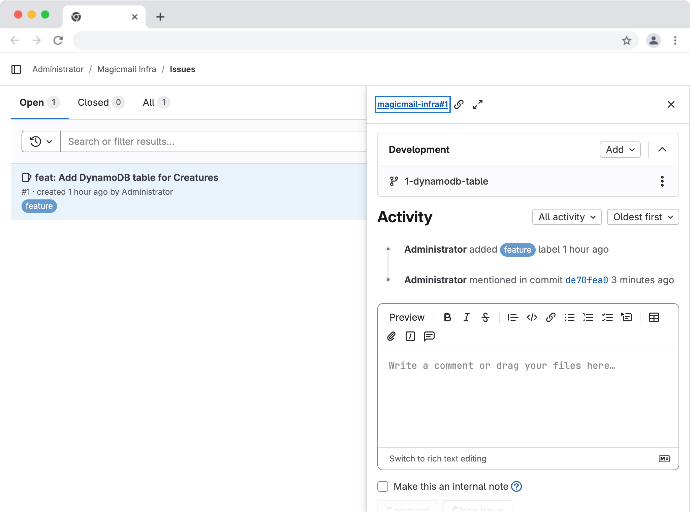

Ethan navigated his browser to the public IP address of the GitLab server they had deployed in the last chapter. He logged in as root and clicked on the magicmail-infra project they had created. There it was – all the CDK code from Chapter 1 and Chapter 2, complete with the commit history he'd created locally. It felt good knowing the code was safely stored somewhere other than just his laptop.
When Maya joined their next call, Ethan shared his screen, showing the GitLab project page. "Okay, Maya, this is great! The code is backed up on our own GitLab server. So, now what? Is this just a backup, or can we do more with it?"
Maya smiled. "Much, much more, Ethan! Storing the code is just the first step. GitLab is designed for collaboration and streamlining the entire development process. Now that our code lives here, we can start using GitLab's features to manage our work, track tasks, review changes safely, and eventually automate everything. Let's dive into how we actually use GitLab for our day-to-day CDK development."
"Think of GitLab not just as a storage locker for your code, but as the central workbench for the MagicMail project," Maya began. "It helps us answer questions like: What features or fixes do we need to work on? Who is working on what? Can someone review my infrastructure changes before they get deployed? How can we ensure changes are consistent and safe?"
"In this chapter, we'll explore some fundamental GitLab workflows that address these questions."
"Before we start changing code, let's quickly familiarize ourselves with the GitLab project interface," Maya suggested, guiding Ethan through the key areas on his screen.
Project Overview: The main page usually shows the README.md (if one exists), recent activity, and key project statistics.
Repository: This is where you spend a lot of time.
Files: Browse the files in your repository, just like in your local file explorer. You can view file content directly in GitLab.
Commits: See the complete history of commits pushed to the repository, showing the author, date, commit message, and the changes introduced in each commit.
Branches: View all the branches in the repository (currently, you should see main and maybe the feature branches if you pushed them). You can see which branch is the default and compare branches.
Tags: View the tags you've created (like chapter-1-end). Tags provide stable pointers to specific commits, often used for releases.
Graph: Visualize the commit history as a graph, clearly showing branches and merges (this becomes more interesting as history grows).
Issues: A powerful tool for tracking tasks, feature requests, bug reports, and discussions related to the project. We'll use this extensively.
Merge Requests (MRs): The core mechanism for proposing changes, discussing them, performing code reviews, and merging code between branches (e.g., merging a feature branch into main). This is central to collaborative workflows.
CI/CD: (We'll cover this in later chapters) This section is where you configure and monitor automated pipelines for building, testing, and deploying your code.
Settings: Configure various project settings like members, permissions, integrations, repository settings, etc.
Caption: Key areas of the GitLab project user interface.
"Take a few moments to click around these sections for the magicmail-infra project to get a feel for it," Maya advised.
"Imagine we need to add that DynamoDB table for storing information about the magical creatures in MagicMail," Maya proposed. "Instead of just jumping into coding, the professional approach is to first document this requirement as a task. In GitLab, we use Issues for this."
"Creating an issue serves several purposes:
Tracking: It ensures the task isn't forgotten.
Clarity: It defines what needs to be done (the 'Definition of Done').
Discussion: Team members can comment, ask questions, and refine the requirement within the issue.
Assignment: Issues can be assigned to specific team members.
Linking: Issues can be linked to specific code changes (commits and merge requests), providing traceability."
Caption: GitLab Issue Workflow
"Let's create an issue for adding the DynamoDB table:"
Navigate: In your magicmail-infra project in GitLab, click on Issues in the left-hand sidebar.
New Issue: Click the New issue button (usually near the top right).
Fill Details:
Title: Enter something clear and concise, like feat: Add DynamoDB table for Creatures. (Using prefixes like feat:, fix:, docs: in titles and commit messages is a good habit borrowed from Conventional Commits).
Type: Leave as Issue.
Description: Provide more detail. Use Markdown for formatting. For example:
xxxxxxxxxx**Goal:** Define a DynamoDB table using AWS CDK to store creature data.
**Acceptance Criteria:*** A new DynamoDB table resource is defined in the `magicmail-infra-stack.ts`.* The table should have a primary key (e.g., `creatureId` as a string).* Billing mode should be Pay-Per-Request (On-Demand) initially.* Enable point-in-time recovery for the table.* The table name should be dynamically generated by CloudFormation/CDK.Assignees: You can assign it to yourself (select root or your user if you create one later).
Labels (Optional): Labels help categorize issues (e.g., feature, bug, infrastructure, priority::high). You can create labels via the sidebar menu if needed. Let's add a feature label.
Milestone (Optional): Useful for grouping issues into larger releases or sprints. We don't need this yet.
Submit Issue: Click Create issue.
Caption: Creating a GitLab issue to track the DynamoDB feature.
"Now you have a formal record of the task," Maya said. "Anyone looking at the project can see what needs to be done. You can comment on it, add checklists, and track its progress."
"Okay, Ethan, now that we have issue #1 created, let's follow a standard workflow to implement it," Maya continued. "The best practice is to create a dedicated feature branch in Git for the work related to this specific issue. This keeps our main branch clean and deployable while we work on the new feature."
Creating the Branch Locally
"Go back to your terminal, ensuring you're in your local magicmail-infra project directory and currently on the main branch."
xxxxxxxxxx# Verify current branch (should output 'main')git branch --show-current"Now, let's create a new branch. A common convention is to include the issue number in the branch name for traceability. Since our issue is #1, we could name the branch 1-dynamodb-table or 1-feature-dynamodb."
Create and switch to the new branch
xxxxxxxxxxgit switch -c 1-dynamodb-tablexxxxxxxxxxOutput:Switched to a new branch '1-dynamodb-table'Caption: Creating a new feature branch locally.
"Perfect. Any changes and commits we make now will be on this 1-dynamodb-table branch, isolated from main."
"Now for the fun part – writing the CDK code to define the DynamoDB table according to the issue's acceptance criteria."
"The necessary DynamoDB constructs are part of the main aws-cdk-lib package, which should already be installed in your node_modules folder. So, we just need to open lib/magicmail-infra-stack.ts in your editor, import the DynamoDB module, and add the table definition."
xxxxxxxxxx// lib/magicmail-infra-stack.tsimport * as cdk from 'aws-cdk-lib';import { Construct } from 'constructs';import * as s3 from 'aws-cdk-lib/aws-s3';import * as dynamodb from 'aws-cdk-lib/aws-dynamodb'; // <-- Import DynamoDB module
export class MagicmailInfraStack extends cdk.Stack { constructor(scope: Construct, id: string, props?: cdk.StackProps) { super(scope, id, props);
// --- Get context values --- // ... context logic ... (assuming this exists if needed)
// --- Define S3 Asset Bucket --- // This bucket stores assets like design files and mockups for MagicMail. const assetsBucket = new s3.Bucket(this, 'MagicMailAssetsBucket', { // ... existing S3 props ... // Make sure these policies are appropriate for your learning environment removalPolicy: cdk.RemovalPolicy.DESTROY, // Example: Adjust as needed autoDeleteObjects: true, // Example: Adjust as needed });
// --- Define DynamoDB Table for Creatures --- START ADDITION --- const creatureTable = new dynamodb.Table(this, 'CreatureDataTable', { // Define the primary key (partition key) partitionKey: { name: 'creatureId', // Name of the attribute type: dynamodb.AttributeType.STRING, // Type of the attribute }, // Use Pay-Per-Request (On-Demand) billing billingMode: dynamodb.BillingMode.PAY_PER_REQUEST, // Enable Point-in-Time Recovery (recommended for backups) pointInTimeRecoverySpecification: { pointInTimeRecoveryEnabled: true }, // Set the removal policy - RETAIN is safer for data, DESTROY is easier for cleanup during dev/book // For the book, let's use DESTROY, but emphasize RETAIN for real data. removalPolicy: cdk.RemovalPolicy.DESTROY, // Use RETAIN for production data! // Table name will be dynamically generated by CloudFormation }); // --- Define DynamoDB Table for Creatures --- END ADDITION ---
// --- Add Tags --- // Apply tags to the stack and resources within it cdk.Tags.of(this).add('Project', 'MagicMail'); cdk.Tags.of(this).add('Environment', 'Development'); // Example environment tag
// --- Define Outputs --- // Output the S3 bucket name new cdk.CfnOutput(this, 'AssetsBucketName', { value: assetsBucket.bucketName, description: 'Name of the S3 bucket for MagicMail assets', });
// --- Add Output for DynamoDB Table Name --- START ADDITION --- new cdk.CfnOutput(this, 'CreatureTableName', { value: creatureTable.tableName, description: 'Name of the DynamoDB table for creature data', }); // --- Add Output for DynamoDB Table Name --- END ADDITION --- }}"Make sure you save the file," Maya reminded. "We've imported the dynamodb module, created a dynamodb.Table construct, specified the partitionKey (creatureId as a string), set the billingMode to PAY_PER_REQUEST, enabled pointInTimeRecovery, and set the removalPolicy to DESTROY for easy cleanup during our exercises (but stressed that RETAIN is crucial for real data). We also added a CfnOutput for the table name."
"Now that we've implemented the feature on our branch, let's commit these changes locally."
"First, check the status:"
xxxxxxxxxxgit status(This should show lib/magicmail-infra-stack.ts as modified).
"Stage the changes:"
xxxxxxxxxxgit add ."And now commit. This is where we link the commit back to the GitLab issue. By including Closes #1 (or Fixes #1, Resolves #1) in the commit message, GitLab will automatically associate this commit with issue #1 and even close the issue when this commit is merged into the default branch (main)."
xxxxxxxxxxgit commit -m "feat: Add DynamoDB table for creatures
Defines the DynamoDB table as per acceptance criteria.- Partition key: creatureId (String)- Billing Mode: PAY_PER_REQUEST- PITR: Enabled- Removal Policy: DESTROY (for dev)
Closes #1"(Note: This is a multi-line commit message. Running git commit without -m opens your default editor, which is often easier for writing detailed messages like this).
"Our changes are committed locally on the 1-dynamodb-table branch. Now we need to push this new branch and its commits up to our GitLab server (origin)."
xxxxxxxxxxgit push -u origin 1-dynamodb-table"The -u flag sets the upstream tracking for this new branch, just like it did for main. You'll likely be prompted for your root username and password again."
"Once the push is complete, if you go back to your GitLab project in the browser, you should see the new branch listed under Repository -> Branches. And if you look at Issue #1, you should see this commit linked to it!" Maya added.
 Caption: Commit automatically linked to the corresponding GitLab issue.
"Excellent! The code implementing the feature is now safely on GitLab, associated with the task it addresses, but still separate from our main codebase. The next step is to propose merging these changes into main using a Merge Request."
"Pushing your branch makes the code available on the server, but it doesn't automatically combine it with the main codebase (main branch)," Maya explained. "To formally propose integrating your feature branch into main, we use a Merge Request, often abbreviated as MR."
(Note: Other platforms like GitHub call this a Pull Request or PR, but the concept is identical).
"A Merge Request is much more than just a request to merge code. It's the central place for:
Describing Changes: Explaining what the branch does and why the changes were made
Code Review: Allowing other team members (or just yourself, for review) to examine the exact code changes (the 'diff'), ask questions, suggest improvements, and approve the changes.
Discussion: Providing a forum for conversation specifically about the proposed changes.
Automation (CI/CD Integration): Triggering automated checks (like tests, linting, security scans, even preview deployments) to run against the proposed code before it gets merged. (We'll set this up later!)
Approval Gates: Enforcing rules like requiring approvals from specific people or successful pipeline runs before merging is allowed.
Traceability: Linking the code changes back to the original issue(s) they address."
"Using MRs is fundamental to safe and collaborative development, especially with Infrastructure as Code, where mistakes can be costly."
Caption: GitLab Merge Request Workflow
"Let's create an MR for our DynamoDB feature branch."
Navigate to GitLab: Go to your magicmail-infra project page on your GitLab server.
Prompt or Manual Creation:
Prompt: Often, after you push a new branch, GitLab detects it and displays a prominent message near the top of the project page like "You pushed branch 1-dynamodb-table just now. Create merge request". Clicking this button is the quickest way.
Manual: If you don't see the prompt, click Merge requests in the left sidebar, then click the New merge request button.
Caption: GitLab prompt to create a Merge Request.
Select Branches: On the 'New Merge Request' page:
Source branch: Select 1-dynamodb-table (the branch with your changes).
Target branch: Select main (the branch you want to merge into).
Fill MR Details: GitLab will pre-fill some information based on your branch name and commit messages. Review and refine:
Title: It might pre-fill with something like "Resolve feat: Add DynamoDB table for Creatures". Adjust if needed for clarity.
Description: This is important! GitLab might pull in your commit messages. Add more context:
Briefly explain the purpose of the MR.
Link the Issue: Ensure it correctly links the issue (e.g., it might automatically add Closes #1 if it detected it in the commit, or you can add #1 manually).
Summarize the changes made (added DynamoDB table, updated stack).
Mention any specific areas for reviewers to focus on.
Example Description:
xxxxxxxxxxThis MR adds the DynamoDB table for storing creature data, as defined in issue #1.
Key changes:- Added `aws-dynamodb` dependency import.- Defined `dynamodb.Table` construct in `magicmail-infra-stack.ts`.- Configured partition key, billing mode, PITR, and removal policy.- Added CfnOutput for the table name.
Closes #1Assignee: Assign it to the person responsible for eventually merging it (can be yourself).
Reviewer(s): Select who should review the code (again, can be yourself for this exercise, or assign Maya conceptually).
Labels/Milestone: Add relevant labels like feature.
Submit MR: Click Create merge request.
Caption: GitLab Merge Request form.
"Now you'll see the Merge Request page," Maya pointed out. "This is the central hub for this proposed change."
Overview/Discussion: The main tab for conversation, description, and seeing related events (commits pushed, pipeline status later).
Commits: Shows the specific commits included in this MR's source branch compared to the target branch.
Changes: This tab shows the diff – the exact lines of code added, removed, or modified. This is where code review happens. You can click on lines to add comments.
Caption: Overview of a GitLab Merge Request page.
"We've successfully proposed our change! The next step in a real workflow would be the code review process, which we'll simulate."
"Code review is a critical step," Maya emphasized. "Having another pair of eyes look over infrastructure code changes before they're merged and potentially deployed can catch errors, suggest improvements, enforce standards, and share knowledge across the team."
"Even though it's just us right now, let's simulate a quick review. Imagine I'm reviewing your MR, Ethan."
Reviewing Changes in GitLab
Overview Tab: Navigate to the Merge Request you just created in GitLab (Click Merge requests in the sidebar, then click on the MR title).
Go to Changes Tab: Click on the Changes tab within the MR.
Examine the Diff: Scroll through the changes. GitLab shows the differences between the source branch (1-dynamodb-table) and the target branch (main). Lines added are typically highlighted in green, removed lines in red. You can see exactly which files were modified and how.
Caption: Reviewing code changes (diff) in the GitLab Merge Request.
Adding Comments "GitLab makes it easy to comment on the changes," Maya demonstrated.
General Comment: On the Overview tab, you can add general comments about the MR as a whole. Let's add one:
Go to the Overview tab.
Scroll down to the comment box.
Type: Looks good overall, the DynamoDB definition matches the issue requirements.
Click Comment.
Inline Comment: For specific feedback, you can comment directly on lines of code in the Changes tab.
Go back to the Changes tab.
Find the line where we set the removalPolicy for the DynamoDB table (removalPolicy: cdk.RemovalPolicy.DESTROY,).
Hover your mouse over that line number. A small comment icon should appear. Click it.
A comment box will open inline. Type: Just double-checking: We definitely want DESTROY here for the exercises, right? Important to remember RETAIN for production!
Click Start a review or Add comment now. (Starting a review batches multiple comments together). Let's click Add comment now for simplicity here.
Caption: Adding an inline code comment during review.
"See how easy that is?" Maya asked. "The author (you, in this case) would get notified about these comments. You could then reply to the comments, discuss the feedback, and even push new commits to the same feature branch (1-dynamodb-table) to address any required changes. The MR would automatically update with the new commits."
Caption: Discussion thread within the Merge Request.
"Once the reviewer is satisfied with the changes (either initially or after discussion and updates), they can formally approve the MR," Maya explained.
"On the MR's Overview tab, there's usually an Approve button (its location and availability might depend on project settings, but it's typically near the merge button). Since we're both the author and reviewer here, let's just click it."
Click the Approve button.
Caption: Approving the Merge Request.
"Approval signifies that the reviewer finds the code acceptable for merging. In larger teams, you might configure rules requiring one or more approvals before the merge button becomes active."
"Now that the MR has been 'reviewed' and approved, it's ready to be merged!"
"With the review complete and approval given, we can now merge the feature branch into our main codebase," Maya declared.
Performing the Merge in GitLab "Go to the Merge Request page in GitLab. Since it's approved (and assuming no merge conflicts or failing pipelines, which we'll cover later), the Merge button should be active."
Caption: The Merge button is ready after approval.
"Before clicking Merge, notice there might be a dropdown arrow next to it or some checkboxes below it," Maya pointed out. "These often control how the merge happens and what happens afterwards."
Merge Commit Strategy: GitLab usually defaults to creating a 'merge commit'. This means it creates a special commit on the main branch that joins the history of the main branch and the 1-dynamodb-table branch. This preserves the full history of the feature branch. Other options might include 'Squash commits' (combining all feature branch commits into one before merging) or 'Fast-forward merge' (only possible if main hasn't changed since the feature branch was created). For now, the default merge commit strategy is fine.
'Delete source branch' checkbox: This option, if checked, will automatically delete the 1-dynamodb-table branch from the GitLab server after the merge is successful. This is usually good practice to keep the repository clean, as the feature branch is no longer needed once merged. Let's check this box.
'Squash commits' checkbox: Leave this unchecked for now to see the full history.
"Okay, go ahead and click the Merge button!"
GitLab will perform the merge operation on the server. After a few moments, the MR status should update to 'Merged'.
Caption: Merge Request successfully merged.
"The code is now merged on the remote GitLab server (origin)," Maya explained. "But your local repository doesn't know about this yet. Your local main branch is still behind the remote main, and your local 1-dynamodb-table branch still exists."
"Let's clean up locally:"
Switch to main: In your terminal, switch back to your main branch:
xxxxxxxxxxgit switch mainPull Changes: Fetch the latest changes from the remote origin and merge them into your local main. This will bring down the merge commit (and the DynamoDB code) that was created on the server.
xxxxxxxxxxgit pull origin mainCaption: Updating the local main branch with changes from the remote.
Delete Local Branch: Now that the feature branch is merged and its changes are incorporated into your local main, you can safely delete the local feature branch:
xxxxxxxxxxgit branch -d 1-dynamodb-tablexxxxxxxxxx (The -d flag ensures the branch is fully merged before deleting; use -D to force delete if needed, but that's usually unnecessary here).Caption: Deleting the merged feature branch locally.
"Your local repository is now up-to-date with the remote main branch, and the redundant feature branch is cleaned up both locally and remotely (since we checked the 'Delete source branch' box in GitLab)."
"One last thing," Maya said. "Remember how we put Closes #1 in our commit message? Let's check if GitLab automatically closed the issue when the MR was merged."
Navigate back to Issues in your GitLab project.
Click on the Closed tab in the issue list.
You should see Issue #1 listed there, marked as closed! Clicking on it should show that it was closed by the commit/MR we just merged.
Caption: Issue automatically closed upon merging the related Merge Request.
"This demonstrates the power of linking issues, branches, commits, and merge requests together in GitLab – it provides excellent traceability and can automate parts of your workflow."
"Before we wrap up, let's tag the current state of our main branch to mark the completion of Chapter 3," said Maya. "This helps readers easily check out the code as it should be at this point."
Ensure main is Up-to-Date: Make sure you are on the main branch locally and have pulled the latest changes (which you should have after the post-merge cleanup):
xxxxxxxxxxgit switch maingit pull origin mainCreate Local Tag: Create the tag pointing to the latest commit on main:
xxxxxxxxxxgit tag chapter-3-endPush Tag: Push this new tag to the remote GitLab server (origin):
xxxxxxxxxxgit push origin chapter-3-end
"Another big step forward today, Ethan," Maya said. "You've learned how real development teams organize work: using issues to track tasks, feature branches to isolate changes, and merge requests to safely review and integrate code."
"You're no longer just writing code — you're managing a workflow. And with GitLab’s tools, you now have clear traceability from idea to implementation."
Maya smiled. "Next up, we'll take this solid collaborative foundation and start building automation around it. You'll see how pipelines can help check every change automatically — without having to remember manual steps."
"To practice this entire workflow again:" Maya suggested.
Create Issue: Create a new issue in GitLab (it will be Issue #2) titled
docs:Update README with projectsetup details. In the description, mention adding sections about cloning, installing dependencies, and configuring AWS profiles. Assign it to yourself.Create Branch: Locally, create and switch to a new branch named
2-update-readme.Make Changes: Edit the
README.mdfile in your project. Add some basic setup instructions based on what you learned in Chapter 1 and 2.Commit: Stage (
git add README.md) and commit the changes. Use a commit message likedocs: Add initial setup instructions to README\n\nCloses #2.Push Branch: Push the new branch to GitLab:
git push -u origin 2-update-readme.Create MR: Create a new Merge Request in GitLab for the
2-update-readmebranch, targetingmain. Ensure the title and description are clear and it referencesCloses #2. Assign it to yourself for review.Review & Approve: Add a comment (e.g., "Looks good") and Approve the MR.
Merge: Merge the MR, making sure the "Delete source branch" option is checked.
Local Cleanup: Switch back to
mainlocally, pull the changes (git pull origin main), and delete the local2-update-readmebranch (git branch -d 2-update-readme).Verify: Check that Issue #2 is now closed in GitLab.
GitLab Issues are used to track tasks, define requirements, and facilitate discussion.
Feature branches (often named including the issue number) isolate development work from the main branch.
Commits should reference the related issue number (e.g.,
Closes #X) to enable automatic linking and closing in GitLab.Feature branches need to be pushed to the remote (
git push -u origin <branch>) before an MR can be created.Merge Requests (MRs) are the central place for proposing, reviewing, discussing, and approving code changes before merging them into the target branch (e.g.,
main).GitLab's MR interface allows inline commenting on code changes (
Changestab) and general discussion (Overviewtab).Merging an MR integrates the source branch's changes into the target branch on the remote repository. Checking "Delete source branch" cleans up the remote.
Post-merge cleanup involves updating the local target branch (
git switch main,git pull) and deleting the local feature branch (git branch -d <branch>).
Now that Ethan has mastered the fundamental Git commands and the basic GitLab workflow for managing code changes (Issue -> Branch -> Commit -> Push -> MR -> Review -> Merge), we're ready to introduce automation. Chapter 4 will delve into the concepts of Continuous Integration (CI) and Continuous Deployment (CD), explaining why they are crucial for Infrastructure as Code. We'll explore the core components of GitLab CI/CD, such as the .gitlab-ci.yml file, Runners, pipelines, stages, and jobs, setting the stage for building our first automated pipeline for the MagicMail CDK project.
Issues: Creating, describing, assigning, labeling.
Merge Requests (MRs): Creating, describing, assigning reviewers/assignees, reviewing changes (diffs), commenting (general and inline), approving, merging, deleting source branch.
Commit/Issue Linking: Using keywords like
Closes #Xin commit messages for automatic linking and issue closing.Branch Visualization: Viewing branches and commit graphs in the UI.
Feature Branching Workflow: The overall process of using branches for specific tasks/features integrated with issues and MRs.
**git switch -c <branch>:** Creating and switching to a new branch.
git push -u <remote> <branch>: Pushing a new local branch to a remote and setting upstream tracking.
git branch -d <branch>: Deleting a local branch (after it has been merged).
**git pull <remote> <branch>:** Fetching changes from a remote branch and merging them into the current local branch.
Conventional Commits (Mentioned): Using prefixes like
feat:,fix:,docs:in commit messages/MR titles for semantic meaning.Code Review: Purpose and practice